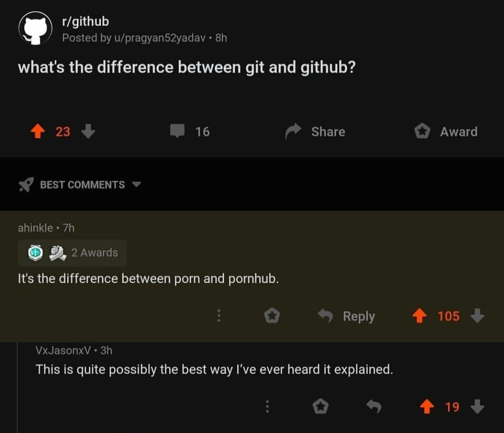

¿Qué es Git?
En pocas palabras, Git (Git, no GitHub) es un sistema de control de versiones. Git es como un supervisor que vive en la carpeta en la que estás trabajando y se encarga de anotar todos los cambios, y tener una bitácora con todos ellos por si quieres volver a un punto anterior. Además permite cosas como trabajar en ramas separadas, y brilla al momento de trabajar en equipos grandes. Usando Git para trabajar en equipos se evitan los problemas de quién tiene la versión final, y permite revisar quién hizo qué cambios en qué momento.
GitHub por su parte es un servicio de almacenamiento. Tiene todas las funcionalidades de git, pero da una página web para accesarlas de manera amigable, y da el servicio de guardar un proyecto en la nube para poder colaborar con más personas.

¿Cómo instalo y uso git?
Las instrucciones de instalación para Windows y Mac están en la página
de descargas del sitio de git. Si usas
MacOS, puedes abrir tu terminal y escribir git. Quizás ya lo tengas
instalado. Si no lo está, te sugerirá descargar el “XCode developer
package” que incluye a git y otros comandos útiles.
Hay varias maneras de interactuar con git. En estas notas se asume que
se interactúa a través de la terminal (también llamada linea de
comandos, shell, etc...). Para MacOS una vez instalado git puedes abrir
tu terminal y escribir el comando git, con eso basta. Si estás en
Windows, después de haber instalado git abre tu menú de aplicaciones y
busca ”git bash“. Te abrirá una terminal (ventana negra con texto). Ahi
ya puedes interactuar con git.
Si estás usando un editor como Visual Studio Code, al abrir la terminal integrada debeías poder usar git directamente.
Snapshots, Not differences
Los sistemas VCS usuales tienen un control de versiones delta-based. Guardan listas de cambios por archivo.
Git guarda snapshots de todos los archivos modificados y guarda apuntadores a cada estado. Cada repositorio de git es una copia completa y funcional del proyecto, no requiere dependencias externas y es todo local.
Git hace checksums en cada commit, lo cual hace difícil o imposible modificar sin que Git se de cuenta o perder información porque todo se verifica y valida.
The Three States
Git tiene tres estados en los que puede estar un archivo en cualquier momento dado:
-
Modified: El archivo tiene modificaciones pero aún no se le ordena a Git incluir los cambios en el siguiente “commit” o confirmación.
-
Staged / Preparado: El archivo fue modificado y marcado para que Git lo observe y guarde su versión actual en el siguiente commit.
-
Commited / Confirmado: Los cambios al archivo ya fueron observados y confirmados. Se guarda el estado actual del archivo en la base de datos de Git.
Adicionalmente hay archivos que pueden estar dentro del directorio, en disco, y no existir dentro de la base de datos Git. Los tres estados anteriores solo aplican para archivos rastreados o tracked. Los archivos no-rastreados o untracked siguen dentro del alcance de búsqueda de Git, y éste aún los puede ver, pero tiene instrucciones de no rastrear modificiaciones.
Similarmente, hay tres secciones o “espacios” en cada proyecto de Git:
-
Working Directory.
-
Staging Area.
-
Git Repository.
Working Directory es el directorio “fisico”, local en tu máquina en donde estás trabajando. Es como cualquier otra carpeta, pero tiene la particularidad de que hay una instancia de Git observándola. El Working Directory es el de una versión particular del proyecto. Los archivos fueron descomprimidos de la base de datos de Git, y puestos en el disco para poder ser modificados como cualquier otro archivo.
Staging Area se puede pensar como el lugar físico a donde se mandan los archivos que están marcados como listos para ser confirmados (commited). En realidad es un archivo, pero la abstracción de lugar es más útil.
Git repository es donde vive la base de datos de Git, y todos los metadatos asociados. Aqui se guardan las diferentes versiones comprimidas de cada commit hecho, asi como apuntadores y metadatos de documentación. El archivo .git es el que contiene toda esta información, y es el que obtiene uno al clonar un repositorio.
Un archivo particular se considera commited (confirmado) si fue modificado, añadido al staging area, y se hizo un commit (confirmación). Los cambios que se le hicieron a ese archivo ahora están grabados en git. Un archivo se considera staged (preparado) si se modifició y se añadió al staging area. Un archivo se considera modified (modificado) si sufrió cambios desde la última versión que conoce Git, pero aún no se añade al staging area. Los archivos modified que no sean añadidos al staging area antes de efectuar un commit no serán rastreados en ese commit, y sus cambios no se guardarán.
Basic Git Workflow
-
Modifica archivos locales en disco.
-
Se elige qué archivos se desea rastrear (track) añadiéndolos al staging area. Son estos y solo estos los archivos que serán parte de la siguente confirmación.
-
Se lleva a cabo una confirmación, en la que se toman un snapshot del estado actual del staging area y se guarda permanentemente en el repositorio Git, junto con datos de identificación y mensajes de confirmación.
Command Line Interface
Para obtener ayuda sobre el comando
$ git add -h
usage: git add [<options>] [--] <pathspec>...
-n, --dry-run dry run
-v, --verbose be verbose
-i, --interactive interactive picking
-p, --patch select hunks interactively
-e, --edit edit current diff and apply
-f, --force allow adding otherwise ignored files
-u, --update update tracked files
--renormalize renormalize EOL of tracked files (implies -u)
-N, --intent-to-add record only the fact that the path will be added later
-A, --all add changes from all tracked and untracked files
--ignore-removal ignore paths removed in the working tree (same as --no-all)
--refresh don't add, only refresh the index
--ignore-errors just skip files which cannot be added because of errors
--ignore-missing check if - even missing - files are ignored in dry run
Básicos de Git
Getting a Git Repository
Usualmente uno obtiene un repositorio de Git en dos maneras:
-
Tomas cualquier carpeta local en tu disco, y la conviertes en un repositorio con
git init, o bien -
Clonas un repositorio de Git existente de algún otro lugar.
Para crear un repositorio nuevo desde una carpeta local, basta con
navegar hasta la carpeta deseada a través de la terminal de comandos, y
ejecutar el comando git init que creará un repositorio nuevo con todo
lo necesario para usar Git, y rastrear cambios en los archivos de ese
directorio. El comando init crea un “esqueleto de git”. En este punto,
ningún archivo está siendo rastreado, todos aparecen como untracked.
Si deseas empezar a rastrear cambios, debes cambiar el estatus de los
archivos de untracked a tracked a través del commando git add.
Cabe mencionar que los archivos nuevos, es decir los originales en un
directorio antes de correr git init, o aquellos creados o añadidos
después de haber creado el repositorio, siempre aparecerán por primera
vez como untracked, hasta que se le señale a Git que se deben
rastrear.
Notas: El comando
git addtiene dos funciones: Cambia el estatus de un archivo de untracked a tracked, y además añade archivos modified al staging area para prepararlos para un commit.
addrecibe como argumento nombres de archivos, o patrones glob.
Tradicionalmente una vez que se han rastreado los archivos de interés se hace un “primer commit”.
$ git commit -m "Primer commit"
El modificador -m es corto para message, y quiere decir que le
mensaje de confirmación viene en seguida rodeado de comillas, como en el
ejemplo de arriba. Si no se usa el modificador (flag) -m, Git abrirá
el editor de texto default de la terminal, por ejemplo Vim, y estarás
atrapado y confundido.
Si deseas copiar un repositorio existente, por ejemplo, para contribuir
a algún proyecto o con tu equipo, entonces se crea un nuevo repositorio
con git clone. El comando clone recibe de argumento un URL a algún
repositorio remoto. Por ejemplo, el comando a continuación clona el
repositorio donde está alojado el libro Pro Git, de Scott Chacon, con
base en el cual se hicieron estas notas.
$ git clone https://github.com/progit/progit2
El comando clone crea una nueva carpeta en el directorio actual donde
residirá el repositorio .git junto con los archivos en el que
corresponde a la versión que clonaste. En automático el nombre de la
carpeta que se va a crear es el nombre del repositorio, en este caso
“progit2”, pero también es posible especificar un nombre distinto. Por
ejemplo, si queremos que la nueva carpeta se llame “libro-git”, pasamos
ese nombre como argumento adicional, es decir:
$ git clone https://github.com/progit/progit2 libro-git
Recording changes
Una vez que se tiene un repositorio de Git y archivos rastreados, se puede empezar a usar todo el potencial de Git.

Como habíamos dicho, un archivo puede estar en uno de cuatro estados en cualquier momento dado: untracked, unmodified, modified, staged, como lo muestra la figura 2.
Para checar en qué punto del ciclo se encuentran los archivos existe el
comando git status. Por ejemplo, al correrlo cuando se ha iniciado un
nuevo repo o no se han hecho cambios desde el último commit, se ve
asi:
$ git status
On branch master
Your branch is up-to-date with 'origin/master'.
nothing to commit, working directory clean
Con la frase “working directory clean” quiere decir que no hay cambios
para el siguiente commit, ya sea porque no se han rastreado los
archivos o porque los archivos rastreados no han sido modificados desde
el último commit. Si se añaden archivos nuevos desde el último commit
al correr git status saldrá un mensaje similar:
Untracked files:
(use "git add <file>..." to include in what will be committed)
ejemplo.txt
con lo cual vemos que el archivo es reconocido por Git, pero que los cambios que se le hagan o su estado actual no serán rastreados por git.
Una vez que se empieza a rastrear un archivo y se hace un primer
commit con el y se empiece a modificar, la siguiente vez que se corra
git status, mostrará algo como lo siguiente:
On branch master
Changes not staged for commit:
(use "git add <file>..." to update what will be committed)
(use "git checkout -- <file>..." to discard changes in working directory)
modified: ejemplo.txt
Eso no quiere decir que el archivo (en este caso ejemplo.txt) dejó de
ser rastreado por Git y que se perdió el historial de cambios, sino que
Git reconoce los cambios hechos al archivo y ahora está esperando a que
se añada al staging area mediante git add, ya que Git deja al
usuario decidir qué cambios se toman en cuenta para un commit dado, en
vez de asumir que todos los cambios entre un commit y el siguiente son
todos relacionados con lo mismo.
Cubiertos los básicos, hay un flag (opción) que se puede pasar al
comando git status para hacerlo más corto y facil de entender: el flag
-s que es corto para –short.
$ git status -s
M ejemplo.txt
A anadido.txt
?? otro.txt
Ahora en vez de listar archivos como staged, modified, etc…Git muestra una lista corta de los archivos de interés con una letra mayúscula a su izquierda. Esa letra a la izquierda se llama .
| Código de Estatus | Significado |
|---|---|
| Sin modificar | |
| M | Modificado |
| A | Añadido |
| D | Eliminado (deleted) |
| R | Renombrado |
| C | Copiado |
| U | Actualizado (updated) |
| ?? | Untracked (sin rastrear) |
Ignoring Files
Muchas veces hay archivos temporales que se crean al correr código en
los cuales no estamos interesados. Para evitar que Git esté listándolos
siempre que se corra status o añadirlos por error, se puede crear una
lista de archivos que no nos interesa rastrear y preferimos que Git
ignore por completo. Esto se hace a través de un .gitignore.
Un .gitignore es un archivo que le dice a Git que archivos no estamos
interesados en rastrear. Por ejemplo, puede que no estemos interesados
en archivos .log, o en archivos .aux que se crean con la compilación
de archivos TeX. En vez de listarlos por nombre, podemos utilizar . Para
esto se utilizan patrones Glob, que son como expresiones regulares
(regex) simplificadas. El ejemplo mas simple es el siguiente:
# Git ignore para proyecto x
*.log
*.aux
Build/
La primera linea empieza con un #, y se toma como un comentario.
Usualmente es util para aclarar el propósito del .gitignore u otras
cosas. El patrón *.log quiere decir “ignora todos los archivos que
terminen con .log”. Ese mismo patron se puede usar con la extensión de
archivo que sea, .log no tiene nada de especial. Análogamente el
patrón Build/ indica que no se debe rastrear nada dentro de la
carpeta Build ni de sus subdirectorios. Afortunadamente, no hace falta
tener esto en cuenta la mayoría del tiempo. GitHub mantiene una librería
de .gitignores estándar para una gran variedad de lenguajes de
programación y proyectos, la cual está disponible en
https://github.com/github/gitignore.
Viewing Staged and Unstaged Changes
Para revisar y comparar cambios con la versión anterior de un archivo el
comando status no es muy útil. El comando para esto es git diff.
Cuando se corre el comando diff sin argumentos Git mostrará una
comparación de los archivos que están en el área de trabajo (working
directory) y la versión que está en el Staging Area, es decir que
está lista para ser confirmada. Si se quiere comparar los cambios que
ya fueron mandados al Staging Area, y que serán efectuados al
siguiente commit, se corre con los argumentos git diff –staged. Con
el arugmento staged se compara el commit más reciente con los
cambios hechos a un archivo desde ese commit.
Ahora bien, correr git diff directamente en la terminal abre el editor
Vim en modo de lectura, lo cual no siempre es lo más cómodo porque Vim
no es precisamente intuitivo. En la práctica es más facil dejar que esto
lo haga una de las interfaces gráficas de Git. En la mayoría de los
casos vienen integradas con tu editor o IDE, y si todo eso falla puedes
utilizar el comando git difftool –tool para ver que visualizadores
tienes disponibles, o simplemente git difftool para lanzar la
herramienta default[1].
Commiting your changes
Una vez que hayas terminado los cambios que deseabas hacer y los
añadiste al Staging Area, es momento de guardar el estado actual de
los archivos mediante un commit. Para esto, tenemos el comando con un
nombre adecuado, git commit. Una vez más, este comando tiene flags
opcionales. En este caso la importante es -m, corto para –message.
En caso de que no se pase esta opción, Git lanzará el editor por defecto
de la terminal, en muchos casos Vim. Para evitar quedar atrapado en Vim,
puedes usar
$ git commit -m "Mensaje de commit"
para poner un mensaje de confirmación o commit message sin necesidad de abrir un editor de texto. Tradicionalmente el commit message se utiliza para listar los cambios hechos desde el último commit en caso de que sea necesario revertir a ese estado por alguna razón.
Un ejemplo de el output de git commit -m, sacado de Pro Git.
$ git commit -m "Story 182: fix benchmarks for speed"
[master 463dc4f] Story 182: fix benchmarks for speed
2 files changed, 2 insertions(+)
create mode 100644 README
En el texto de salida del comando vemos algunas cosas interesantes. Por
ejemplo vemos el nombre del branch o rama al que se confirmaron tus
cambios (en este caso master)[2], y un código alfanumérico llamado
checksum, en este caso 463dc4f, y un resumen corto de los cambios,
inserciones y eliminaciones.
Dado que la mayoría del tiempo se quieren agregar todos los archivos
modificados al staging area sería deseable poder brincar el comando git add . y confirmar todos los cambios en un solo comando. Para eso existe
el flag -a, el cual equivale a añadir todos los cambios al Staging
Area y luego confirmarlos con commit. Los flags -a y -m se pueden
usar juntos, pero poneindo -m al final (puesto que la sintaxis usual
de interfaces de command line espera el argumento de un flag
inmediatamente después de que se utilice este flag). Por ejemplo:
$ git commit -a -m "Fixes"Removing Files
Para quitar archivos del repositorio de Git hay que sacarlos de los
archivos rastreados. Para eso existe el comando git rm. Mucho cuidado,
rm no solo remueve el archivo de la base de datos de Git, también lo
elimina en tu Working Directory! Para quitarlo de los archivos
rastreados sin eliminarlo del directorio local se utiliza la opción
–cached. Cabe mencionar que este comando acepta no solo nombres de
archivos, sino patrones Glob como se mencionó antes.
Viewing the Commit History
El punto entero de tener un sistema de control de versiones es poder registrar cambios graduales, por eso se tiene el sistema de commits. En caso de ser necesario, se puede navegar a puntos anteriores en el tiempo, y revertir a esos cambios. También se puede experimentar en el proyecto sin temor a dañar algo y que sea irreversible.
Para revisar el historial de cambios y confirmaciones existe el comando
git log. Por ejemplo, al correrlo dará un resultado como este:
$ git log
commit ca82a6dff817ec66f44342007202690a93763949
Author: Scott Chacon <schacon@gee-mail.com>
Date: Mon Mar 17 21:52:11 2008 -0700
Change version number
commit 085bb3bcb608e1e8451d4b2432f8ecbe6306e7e7
Author: Scott Chacon <schacon@gee-mail.com>
Date: Sat Mar 15 16:40:33 2008 -0700
Remove unnecessary test
commit a11bef06a3f659402fe7563abf99ad00de2209e6
Author: Scott Chacon <schacon@gee-mail.com>
Date: Sat Mar 15 10:31:28 2008 -0700
Initial commit
Al correr git log sin argumentos se obtiene una lista de los commits
del repo en orden cronológico inverso. Cada listado tiene la información
relevante del commit: el checksum que sirve como identificación única,
nombre y correo electrónico del autor, la fecha y hora de confirmación,
y el mensaje que se dió.
El comando log tiene una variedad de opciones. Por ejemplo, la opción
-n muestra los (n) commits más recientes. La opción -p, corto para
–patch, muestra los cambios hechos por cada commit. Equivale a correr
diff sobre cada commit individualmente. La opción –stat da
estadísticas rápidas sobre cada commit como el número de líneas
modificadas.
Si el resultado aparece demasiado extenso hay una opción para hacerlo
más legible: –pretty. La opción –pretty funciona como un
diccionario key-value. Es decir, se utiliza con otras opciones, por
ejemplo oneline, short, full, fuller. Si se necesita aún más
flexibilidad el comando acepta un objeto tipo format, en el que se le
puede especificar un string format para acomodar los datos que se
crean convenientes en la forma deseada. Puesto que no es muy común no
incluyo más detalles. Se pueden encontrar mejores referencias en , o
simplemente corriendo man git log.
Una buena opción para un log corto es git log –oneline –decorate, que
da por ejemplo:
$ git log --oneline --decorate
a3eb382 (HEAD -> master) Viewing commit history
ca82a6d Change version number
17c4c59 Remove unnecessary test
6cdc27e Initial commit
que solo muestra el número identificador abreviado y el mensaje de confirmación.
Cuando se está trabajando con diferentes ramas el comando git log –graph –oneline –decorate muestra un arbol con las ramas de
desarrollo y su interacción entre ellas. Hablaremos con más detalle de
ramas más adelante.
Vale la pena mencionar que Git hace una distinción entre author y committer. Es decir, el autor es quien hizo los cambios, el confirmador (committer) es simplemente quien los confirmó.
El comando log tiene aún más opciones y funciones, las cuales no tiene sentido revisar ahora.
Undoing things
Quizás una de las más grandes ventajas de usar un VCS es poder revertir
cambios, pero hay que tener en cuenta que no todo se puede, y si no se
tiene cuidado se pueden perder cosas de manera permanente. La mayoría de
los siguientes comandos y cómo se hace lo que se describe a continuación
viene en pequeñas instrucciones o pistas cuando se corre git status
sin argumentos.
Por ejemplo, si se hizo un commit antes de tiempo, se puede usar el
comando commit una vez más, pero con la opción –amend. Esto
incorpora los cambios sin duplicar una confirmación. También es util
para modificar el mensaje de confirmación por si se quiere añadir más
información.
Otro error comun es añadir dos archivos al Staging Area cuando alguno
de los dos no estaba listo, o simplemente porque se quiere confirmar los
cambios por separado. El comando git reset HEAD <archivo> sacan el
archivo seleccionado del Staging Area pero conservan las
modificaciones.
Ahora bien, ¿cómo revierto los cambios no deseados a un archivo? Para
des-modificar un archivo y regresarlo al estado en el que estaba en el
último commit, se usa git checkout – <archivo> para des-modificar
archivo. Hay que tener mucho cuidado al usar este comando, porque
reemplaza el archivo en el Working Directory completamente por otra
vesión de el. No hay forma de deshacer estos cambios (ni con ctrl-z).
Más adelante discutimos mejores prácticas para guardar temporalmente cambios y otras técnicas.
Working with remotes
Introducimos el concepto de un Remote. Un remote es una versión de
tu Git Repo alojada en algún otro lugar, como el internet. Gracias a los
remotes es que podemos colaborar en proyectos. Para recuperar cambios
o para subir los propios usamos los comandos pull, fetch y push
que dicutimos más adelante.
Para listar los remotes que tiene un repo podemos usar el comando git remote sin argumentos. Si creaste un nuevo repo desde cero, remote no
dará ningún resultado, porque aún no has configurado ningún remote
para el repo actual. Si lo clonaste de algún lugar en internet el
comando debería listar por lo menos un remote: origin, que es el
nombre por defecto que recibe el remote original de donde fue clonado
el repositorio local. El comando sin argumentos solo da los nombres con
los cuales tiene guardados los remotes, lo cual no siempre es lo más
útil. Corriendo git remote -v obtenemos una lista no solo de los
remotes disponibles sino también el url
al que nos estamos comunicando para subir y bajar cambios[3].
Como decíamos, clonar un repo automáticamente añade el origen como un
remote, y lo nombra origin apropiadamente. Para añadir remotes
nuevos se usa el comando git remote add <shortname> <url>. Por
ejemplo, el url que va entre corchetes es
el url de la página de GitHub en donde
estará alojado el repo. Una vez que se tiene configurado un remote es
fácil jalar o empujar cambios. El shortname que le asignaste al crear
un remote es el nombre con el que será conocido desde ese momento, y
con el cual te referirás para jalar o empujar cambios. Es decir, actúa
como un alias para todo el url.
Pulling
Para jalar los cambios que están en el remote, existe el comando git fetch <remote>, que se traduce como “ir a buscar”, o “traer”. El
remote entre corchetes es el nombre corto que se le asignó a el
remote del cual se quiere hacer fetch al momento de configurarlo.
Este comando baja la versión más reciente del repo disponible en el
remote, pero fetch solo obtiene la versión más reciente y la
almacena en una nueva rama[4], pero no incorpora los cambios a tu
versión de los archivos. El estado de los archivos en tu Working
Directory no se ve afectado por fetch, y para incorporar los cambios
se tendría que hacer una unión (merge) entre la rama actual y la que
se creó, lo cual discutiremos a detalle en la sección sobre ramas.
Afortunadamente, el comando git pull <remote> <branch> ahorra el
proceso de unir ramas, y además de bajar los cambios más recientes del
remote, los combina automáticamente con el estado actual de los
archivos en el Working Directory. Lo realmente interesante de Git está
en lo que está escrito arriba: Git puede combinar cambios
automáticamente y en la mayoría de los casos, sin ninguna clase de
ayuda. Hablaremos más tarde de qué se hace cuando Git encuentra cambios
conflictivos entre el estado de un archivo en el Working Directory y
la versión en el remote.
Pushing
Cuando deseas publicar tu versión del repo y el estado actual de los
archivos rastreados, puedes usar el comando git push <remote> <branch>
para empujar los cambios a el remote que se da como argumento, a la
rama que se especifica también entre corchetes.
Un detalle importante es que para hacer push a un remote, tu versión local debe estar al día con la versión más reciente en el remote. Si el remote tiene cambios más recientes a los que están en tu Working Directory, Git te pedirá que bajes los cambios del remoto y actualices tu versión a la que bajaste. Hasta entonces se puede hacer push.
Cabe mencionar que no siempre se tiene permiso de hacer push a cualquier repositorio, se necesita que el dueño te de permiso.
Cuando se tienen diferentes origins a los que se empuja y jala
regularmente, a veces es util pedir ayuda para recordar qué nombre corto
está asociado a qué url, entre otras
cosas. El comando git remote show <remote> da más información acerca
del remote asociado al nombre corto que se da como argumento.
Dependiendo del caso de uso el comando puede dar mucha información. Por
ahora no damos más detalles al respecto.
También es posible cambiar el nombre corto de un remote después de
haberlo configurado. Esto se hace con git remote rename <oldname> <newname>.
Análogamente, es fácil remover remotos, como cuando ya no se utilizan
más. Esto se hace mediante git remote remove <remote>.
Tagging
Otra habilidad de Git es etiquetar (tag) commits específicos; lo cual es muy util cuando hubo cambios importantes o ese commit particular está asociado a una versión importante o algo del estilo.
Listar los tags existentes es fácil, se hace con git tag. Si no se
ha etiquetado ningún commit, el comando no regresará nada. Cabe
mencionar que el orden en el que se listan los resultados es alfabético,
no cronológico.
Un uso interesante es revisar una serie específica de versiones, por
ejemplo, si se corre git tag -l "v1.8.5*" en el repositorio donde está
alojado el código fuente de Git, podemos ver la serie de versiones
1.8.5.(x).
$ git tag -l "v1.8.5*"
v1.8.5
v1.8.5-rc0
v1.8.5-rc1
v1.8.5-rc2
v1.8.5-rc3
v1.8.5.1
v1.8.5.2
v1.8.5.3
v1.8.5.4
v1.8.5.5
En este ejemplo, el * que se usa en el string después del switch -l
(corto para –list) es un ejemplo de una expresión regular, y quiere
decir “cualquier caracter”.
Git permite dos tipos de tags: lightweight y annotated. El tipo lightweight es solo una referencia a un punto particular del historial de commits. Un tag del tipo annotated se guarda como su propio commit, y tiene toda la información que contendría uno, como la fecha, autor, etc… Por ejemplo, se puede crear una etiqueta anotada como
$ git tag -a v1.0 -m "Version 1!"
El swith -a es corto para –annotated.
Para crear una etiqueta ligera, se usa el comando tag sin las opciones
-a ni -m. Por ejemplo
$ git tag v1.0
Ahora puedes revisar la información del commit que fue etiquetado. Eso
se hace con git show <tag>.
También es posible etiquetar commits que se hicieron en el pasado. Eso
se hace con git tag <tag> <hash> en donde hash es el código de
identificación corto que está asociado al checksum de un commit
particular. Este hash sale por ejemplo al correr git log con sus
posibles opciones.
Por default Git no comparte los tags hechos localmente, se tiene que
empujar mediante push como si fueran ramas independientes. Aún más
facil que eso, se puede correr git push <remote> –tags para subir
todos los tags al remote sin necesidad de hacerlo uno a uno. Cabe
mencionar que el comando anterior empuja ambos tipos de tags: anotadas
y ligeras.
Para eliminar tags existe el flag -d, corto para –delete. Por
ejemplo, si queremos eliminar el tag de ejemplo que hicimos arriba,
corremos
$ git tag -d v1.0
Sin embargo, esto no va a eliminar las etiquetas del remote al que fueron subidas. Si se quiere eliminar también del remote, se usa
$ git push <remote> --delete <tagname>
Nota: Se pueden crear aliases para evitar escribir comandos largos con argumentos complejos.
Git Branching
El workflow de ramas (branches) permite bifurcar el estado de los archivos en el Working Directory para hacer modificaciones, sin arruinar el estado de la rama principal. Es usual crear ramas para desarrollar nuevas funciones, o incluso para hacer pruebas sin temor de arruinar un proyecto funcional. También es muy usual en un workflow de equipo tener diferentes ramas para cada integrante del equipo, o para sub-equipos.
El comando para crear nuevas ramas es
$ git branch <branchname>
El crear nuevas ramas implica solamente crear un nuevo apuntador, que empieza apuntando al la rama en el cual se creó, en el mismo punto en el que se creó.

En la figura 3 se muestra un ejemplo de lo que pasa
cuando se crea una nueva rama. Las cajas grises con códigos hash unidas
por flechas constituyen la rama original, usualmente llamada master.
Cada caja gris representa un commit, representada por el código hash
que la identifica. La caja amarilla apuntando al commit f30ab
representa al apuntador que viene con cada rama, en ese caso el
apuntador original que identifica a la rama, por eso tiene el nombre
master. En el momento en el que se crea una nueva rama aparece el
nuevo apuntador (caja naranja), en este caso llamada testing. Esa
nueva caja llevará el nombre de la nueva rama recién creada, y es la que
se encarga de apuntar a los cambios que se hicieron . En el momento en
que se haga un nuevo commit estando en testing, el apuntador naranja
avanzará, dejando atrás a master. A partir de ese punto se pueden
combinar (merge) las ramas master y testing para ponerlas al día,
o bien, regresar el estado de testing a como estaba en master.
El apuntador especial HEAD indica a Git en qué punto se está
trabajando en un momento dado. Es decir, apunta a la rama y el punto
sobre ella sobre el cual se escribirá al hacer un nuevo commit.

Para cambiar de rama, es decir mover el apuntador HEAD para apuntar a
testing y empezar a hacer commit ahi, usamos el comando
$ git checkout <branch>
A la rama activa se le dice la rama checked-out. Esto claro tiene que
ver con que el comando para activar y crear ramas es git checkout,
pero checkout hace más que eso.
Si ahora hacemos un nuevo commit después de haber cambiado a testing
pasará lo siguiente:

Si corremos el comando
$ git checkout master
en este momento, HEAD los archivos del Working Directory volverán al
estado en el que estaban en ese momento, y además se moverá HEAD de
vuelta a ese punto. Es decir, si hacemos un nuevo commit en este
punto, ahora habrá una bifurcación entre master y testing.

Como muestra la figura 4, al hacer nuevos commits
se hace avanzar HEAD. Ambas ramas convergen en f30ab porque son el
ancestro que tienen en común. Para visualizar estos movimientos se puede
usar git log –oneline –decorate –graph –all.
Para crear una rama nueva y moverse a ella en un solo comando, se
utiliza git checkout con la opción -b, corto para –branch. Por
ejemplo
$ git checkout testing
crea una nueva rama llamada testing, y además mueve HEAD a ella para
que el siguiente commit se haga sobre la nueva rama.
Basic Branching and Merging
El procedimiento básico para unir (merge) dos ramas es moverse, o
“activar” (checkout) la rama hacia la cual se va a unir, y correr el
comando git merge <branch>. Hay diferentes tipos de merges que
pueden ocurrir. Cuando la rama que se unió estába directamente adelante,
sin cambios divergentes, Git lleva a cabo una unión fast-forward
(avance rápido). Es decir, Git simplemente mueve el apuntador HEAD
hacia adelante.
Si después de unir dos ramas ya no necesitas la que fue unida, la puedes
eliminar fácilmente con el comando branch y la opción -d, corto para
–delete
$ git branch -d <branch>
Cuando intentas unir dos ramas con cambios divergentes, o a la que se intenta unir no es ancestro directo de la que se une, Git no puede hacer una unión fast-forward. En esos casos, Git tiene que hacer una unión entre tres commits (three-way merge), que podemos pensar como nodos sobre las ramas. Sin embargo, como los cambios en ambas ramas no conflictúan entre sí, Git aún puede hacer una unión simple; es decir, una que no requiere intervención del usuario. Cuando esto sucede, se dice que no hay conflictos. En este caso particular, la unión se hace entre los dos nodos usuales más un tercer nodo que es su ancestro común más cercano.
Al unir dos ramas, Git combina los contenidos de manera automática (si puede), y automáticamente crea un nuevo commit.
Basic Merge Conflicts
Hay ocasiones en las que Git no puede hacer uniones simples y necesita consultar con un usuario cuales cambios mantener. Estos conflictos se dan cuando se intentan fusionar (unir) dos ramas que tienen cambios que no son compatibles entre si. Por ejemplo, cuando se modifica un archivo de dos maneras distintas en el mismo lugar con respecto a el ancestro en común más cercano.
Un ejemplo de cuando no se puede hacer una unión limpia:
$ git merge iss53
Auto-merging index.html
CONFLICT (content): Merge conflict in index.html
Automatic merge failed; fix conflicts and then commit the result.
Cuando sucede un conflicto, Git pausa el proceso de unión que culmina
con un commit y espera a que el usuario resuelva los conflictos. Si
corremos git status después de un conflicto, podemos ver en qué
archivos se dió el conflicto para empezar a solucionarlo
$git status
On branch master
You have unmerged paths.
(fix conflicts and run "git commit")
Unmerged paths:
(use "git add <file>..." to mark resolution)
both modified: index.html
no changes added to commit (use "git add" and/or "git commit -a")
En el ejemplo anterior el conflicto se dió en el archivo index.html.
Cuando ocurre un conflicto Git modifica los archivos y les añade
marcadores para ayudar a resolver el conflicto. Estos marcadores están
para que se pueda abrir manualmente el archivo, y decidir qué cambios se
quedan y cuales se van. Abriendo el archivo con conflicto, se vería algo
como esto:
<<<<<<< HEAD:archivo.txt
Contenido en HEAD. Es decir, rama local hacia la cual se hace la union
=======
Contenido en branch, rama que esta siendo unida a HEAD
>>>>>>> branchname:archivo.txt
Entre los corchetes de apertura <<<<<<< y el separador ======= están
los cambios que están en donde actualmente se encuentra HEAD. Es
decir, los cambios en la rama que está activada actualmente, hacia la
cual se quiere unir. En el encabezado se aclara en qué rama está, y el
archivo que tuvo conflictos. En la parte desde el separador hasta los
corchetes de cerradura >>>>>>> están los cambios incoming. Es decir,
los que están en la rama que se está tratando de unir.
Algunos editores de texto y IDEs están configurados para reconocer estos
bloques generados automáticamente por Git, y dan ayuda visual
poniendolos en fondos de colores, o dando botones de ayuda para aceptar
cambios incoming, mantener el estado actual, o incluso mantener ambos.
Si tu editor o IDE no tiene esta funcionalidad, puedes usar las
herramientas visuales que vienen con Git, corriendo git mergetool.
Para resolver un conflicto se eligen los cambios a mantener (o se borran
ambos), y se quitan los marcadores generados por Git. Una vez que se
decidió qué cambios mantener y se añade el archivo resuelto (sin
marcadores) al Staging Area, Git entenderá que el conflicto fue
resuelto. Si se corre git status en este punto Git pedirá confirmación
de que se resolvió exitosamente el conflicto. Para finalizar la unión se
confirman todos los cambios con git commit. Nótese que ahora no
escribimos un mensaje de confirmación, Git lo añade automáticamente con
la información más importante para señalizar que hubo una unión y
resolución de conflicto.
Branch Management
El comando git branch al usarse sin argumentos va a listar todas las
ramas del repo, y marca la activa con un * al lado izquierdo de su
nombre. Para mostrar el commit más reciente en cada rama, se puede
usar git branch -v.
A veces es util ver si las ramas tienen cambios incorporados a la rama
actual, o si aún no se han unido. Para esto existen las opciones
–merged y –no-merged que actúan como filtro. Por ejemplo al correr
$ git branch --merged
mergedbranch
* master
vemos que la rama mergedbranch ya fué unida a master. Como ya está
unida, es seguro eliminarla con git branch -d mergedbranch sin ningún
peligro. Sin embargo, si intentamos eliminar una rama que no ha sido
unida, digamos unmerged-b, Git nos dará un error y pedirá
confirmación.
$ git branch -d unmerged-b
error: The branch 'unmerged-b' is not fully merged.
If you are sure you want to delete it, run 'git branch -D unmerged-b'.
Como muestra el mensaje de ayuda del comando anterior, se puede
sobreescribir el mecanismo de Git diseñado para no perder cambios usando
el switch -D (en mayúscula). Esto solo se hace si estás consciente de
que se perderán todos los cambios en esa rama. Por ejemplo, si era una
rama throwaway en la que se hizo un experimento.
Basic Branching and Merging
El procedimiento básico para unir (merge) dos ramas es moverse, o
“activar” (checkout) la rama hacia la cual se va a unir, y correr el
comando git merge <branch>. Hay diferentes tipos de merges que
pueden ocurrir. Cuando la rama que se unió estába directamente adelante,
sin cambios divergentes, Git lleva a cabo una unión fast-forward
(avance rápido). Es decir, Git simplemente mueve el apuntador HEAD
hacia adelante.
Si después de unir dos ramas ya no necesitas la que fue unida, la puedes
eliminar fácilmente con el comando branch y la opción -d, corto para
–delete
$ git branch -d <branch>
Cuando intentas unir dos ramas con cambios divergentes, o a la que se intenta unir no es ancestro directo de la que se une, Git no puede hacer una unión fast-forward. En esos casos, Git tiene que hacer una unión entre tres commits (three-way merge), que podemos pensar como nodos sobre las ramas. Sin embargo, como los cambios en ambas ramas no conflictúan entre sí, Git aún puede hacer una unión simple; es decir, una que no requiere intervención del usuario. Cuando esto sucede, se dice que no hay conflictos. En este caso particular, la unión se hace entre los dos nodos usuales más un tercer nodo que es su ancestro común más cercano.
Al unir dos ramas, Git combina los contenidos de manera automática (si puede), y automáticamente crea un nuevo commit.
Basic Merge Conflicts
Hay ocasiones en las que Git no puede hacer uniones simples y necesita consultar con un usuario cuales cambios mantener. Estos conflictos se dan cuando se intentan fusionar (unir) dos ramas que tienen cambios que no son compatibles entre si. Por ejemplo, cuando se modifica un archivo de dos maneras distintas en el mismo lugar con respecto a el ancestro en común más cercano.
Un ejemplo de cuando no se puede hacer una unión limpia:
$ git merge iss53
Auto-merging index.html
CONFLICT (content): Merge conflict in index.html
Automatic merge failed; fix conflicts and then commit the result.
Cuando sucede un conflicto, Git pausa el proceso de unión que culmina
con un commit y espera a que el usuario resuelva los conflictos. Si
corremos git status después de un conflicto, podemos ver en qué
archivos se dió el conflicto para empezar a solucionarlo
$git status
On branch master
You have unmerged paths.
(fix conflicts and run "git commit")
Unmerged paths:
(use "git add <file>..." to mark resolution)
both modified: index.html
no changes added to commit (use "git add" and/or "git commit -a")
En el ejemplo anterior el conflicto se dió en el archivo index.html.
Cuando ocurre un conflicto Git modifica los archivos y les añade
marcadores para ayudar a resolver el conflicto. Estos marcadores están
para que se pueda abrir manualmente el archivo, y decidir qué cambios se
quedan y cuales se van. Abriendo el archivo con conflicto, se vería algo
como esto:
<<<<<<< HEAD:archivo.txt
Contenido en HEAD. Es decir, rama local hacia la cual se hace la union
=======
Contenido en branch, rama que esta siendo unida a HEAD
>>>>>>> branchname:archivo.txt
Entre los corchetes de apertura <<<<<<< y el separador ======= están
los cambios que están en donde actualmente se encuentra HEAD. Es
decir, los cambios en la rama que está activada actualmente, hacia la
cual se quiere unir. En el encabezado se aclara en qué rama está, y el
archivo que tuvo conflictos. En la parte desde el separador hasta los
corchetes de cerradura >>>>>>> están los cambios incoming. Es decir,
los que están en la rama que se está tratando de unir.
Algunos editores de texto y IDEs están configurados para reconocer estos
bloques generados automáticamente por Git, y dan ayuda visual
poniendolos en fondos de colores, o dando botones de ayuda para aceptar
cambios incoming, mantener el estado actual, o incluso mantener ambos.
Si tu editor o IDE no tiene esta funcionalidad, puedes usar las
herramientas visuales que vienen con Git, corriendo git mergetool.
Para resolver un conflicto se eligen los cambios a mantener (o se borran
ambos), y se quitan los marcadores generados por Git. Una vez que se
decidió qué cambios mantener y se añade el archivo resuelto (sin
marcadores) al Staging Area, Git entenderá que el conflicto fue
resuelto. Si se corre git status en este punto Git pedirá confirmación
de que se resolvió exitosamente el conflicto. Para finalizar la unión se
confirman todos los cambios con git commit. Nótese que ahora no
escribimos un mensaje de confirmación, Git lo añade automáticamente con
la información más importante para señalizar que hubo una unión y
resolución de conflicto.
Branch Management
El comando git branch al usarse sin argumentos va a listar todas las
ramas del repo, y marca la activa con un * al lado izquierdo de su
nombre. Para mostrar el commit más reciente en cada rama, se puede
usar git branch -v.
A veces es util ver si las ramas tienen cambios incorporados a la rama
actual, o si aún no se han unido. Para esto existen las opciones
–merged y –no-merged que actúan como filtro. Por ejemplo al correr
$ git branch --merged
mergedbranch
* master
vemos que la rama mergedbranch ya fué unida a master. Como ya está
unida, es seguro eliminarla con git branch -d mergedbranch sin ningún
peligro. Sin embargo, si intentamos eliminar una rama que no ha sido
unida, digamos unmerged-b, Git nos dará un error y pedirá
confirmación.
$ git branch -d unmerged-b
error: The branch 'unmerged-b' is not fully merged.
If you are sure you want to delete it, run 'git branch -D unmerged-b'.
Como muestra el mensaje de ayuda del comando anterior, se puede
sobreescribir el mecanismo de Git diseñado para no perder cambios usando
el switch -D (en mayúscula). Esto solo se hace si estás consciente de
que se perderán todos los cambios en esa rama. Por ejemplo, si era una
rama throwaway en la que se hizo un experimento.
Branching Workflows
En esta subsección revisamos algunos de los workflows más comunes que se usan para trabajar con Git y ramas. Esto es en realidad más descriptivo que normativo, pero es útil para estructurar proyectos grandes. En especial porque estos workflows están diseñados para evitar conflictos a la hora de las uniones, y tener tantas uniones simples como sea posible.
Long-Running Branches
La estructura de desarrollo de ramas long-running se basa en tener un número pequeño de ramas principales que siempre están abiertas, dedicadas a las diferentes etapas del desarrollo, las cuales se unen entre si de manera regular.
Una estrategia común es tener dos ramas principales: master y
development (los nombres no son importantes). En master se tiene el
código en su estado más pulido, mientras que en development se hacen
los cambios importantes que solo se unen a master una vez que están
terminados, probados, etc… Es usual agregar una rama o serie de ramas
más dedicadas a resolver problemas particulares. Estas ramas se unen a
development una vez que se resolvió aquello para lo cual fueron
creadas, y se eliminan poco después. Este tipo de ramas se conocen como
topic branches, o ramas de tema.
Es útil pensar en las ramas estructuradas de esta manera como almacenes en los que se guarda código en función de su madurez.
Rebasing
Como el nombre sugiere, consiste en cambiar de base una versión particular. Es decir, es como hacer los cambios que se efectuaron a través de una rama, como si se hubieran hecho empezando desde otro punto de la rama o de otra rama por completo.
$ git rebase master
La operación funciona encontrando al ancestro común de las dos ramas que se están uniendo, y aplicando lo cambios gradualmente. Una vez que se hace un rebase, se puede hacer un merge simple del tipo fast-forward hasta la punta de la rama. Todo eso gracias a que ahora la punta de la rama y el commit al que se hizo el rebase tienen una ancestría en común, una ancestría lineal. Ya no hay ningún conflicto de versiones.
Vale la pena hacer notar que el producto final no tiene nada de diferente a hacer un merge. La única ventaja notable es que hace que la historia de commits, los logs, esté más limpio y claro.
Hay rebases más complejos, pero francamente no entendí del todo, y valdrá la pena revisarlo con más calma.
No incluí los cambios que quería en un commit anterior. ¿Ahora qué hago?
Ua buena aplicación del rebasing es justo en la situación del título.
¿Qué tal si yo tenía planeado incluir los cambios a el archivo
ìndex.txt en un commit que hice con el mensaje “Cambios a index.txt”,
pero me equivoqué y no añadí index.txt al staging area antes de ese
commit?
En concreto: Consideremos el log de cambios de un repo:
a0b0c0E3 (HEAD -> master) Cambios que no eran de index.txt
.
.
.
a0b0c0E1 Cambios a index.txt
Digamos que yo quería incluir los cambios a index.txt en el commit con
hash a0b0c0E1, pero al correr git status me señala que los cambios
no están “staged for commit” para el siguiente commit y por lo tanto no
se añadieron antes. Para volver a antes de a0b0c0E1 y ahora si añadir
los cambios en ese commit, podemos usar rebase como en la siguiente
receta:
-
git rebase –interactive ’a0b0c0E1^’. Nótese que el hash del commit al que nos estamos refiriendo está postfijo por un “caret” (^). Eso indica rebase no aa0b0c0E1, sino antes de el. -
En el editor predeterminado se abrirá un archivo que se ve más o menos asi:
pick a0b0c0E3 HEAD Cambios que no eran de index.txt pick a0b0c0E1 Cambios a index.txtCambia
pickaediten la línea que tiene el chash del commit el cual deseas modificar o añadirle archivos. Guarda el archivo y ciérralo. -
Después de los pasos anteriores, Git marca al commit
a0b0c0E1como el actual (donde se encuentraHEAD), y por lo tanto se le pueden añadir cambios con ammend. Por ejemplo:git add index.txt git commit --amend -m "Ahora si, cambios a index.txt" -
Para acabar y volver a la punta de la rama actual, es decir donde estábamos antes, seguimos el consejo de Git y corremos
git rebase –continue.